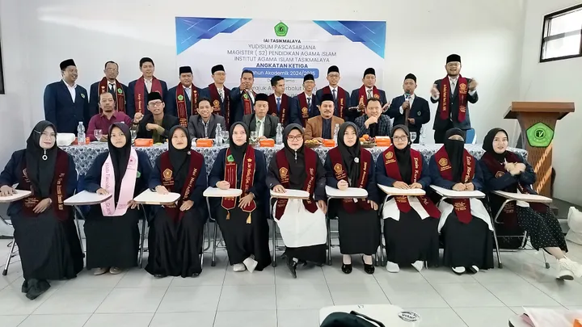

IAIT hadir sebagai pusat pendidikan tinggi Islam yang unggul, berlandaskan Al-Qur'an dan Sunnah, serta berkomitmen mencetak generasi intelektual yang berakhlak mulia, inovatif, dan siap bersaing di era global.
Informasi terbaru seputar kampus, prestasi, dan kegiatan mahasiswa
Pelantikan berlangsung khidmat menandai era baru kepemimpinan kampus yang lebih progresif...
Baca SelengkapnyaPerlindungan penuh bagi mahasiswa KKN sebagai bentuk kepedulian terhadap keselamatan...
Baca Selengkapnya
Prestasi gemilang program magister dalam mencetak lulusan yang berkualitas dan siap berkontribusi.
Baca SelengkapnyaAcara tahunan yang memadukan seni, budaya, dan dakwah di lingkungan kampus.
Baca Selengkapnya